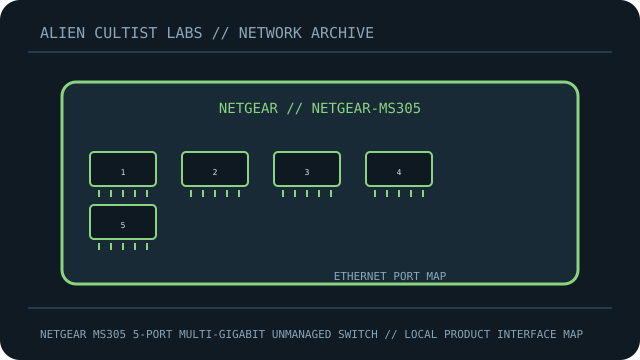

[ MODEL-SPECIFIC NETWORK HARDWARE ]
NETGEAR MS305 5-Port Multi-Gigabit Unmanaged Switch
Compact five-port multi-gigabit switch with five 2.5GBASE-T connections. This record is limited to the exact named model; revisions and regional SKUs may differ.

MODEL IDENTIFICATION: Match the complete model number and revision on the manufacturer label before applying specifications. Published link rates are nominal, not measured application throughput.
Published specifications and compatibility
| Exact product | NETGEAR MS305 5-Port Multi-Gigabit Unmanaged Switch |
|---|---|
| Archive subcategory | Unmanaged switches |
| Physical ports | 5 × 2.5GBASE-T RJ-45; multi-gigabit auto-negotiation to 2.5/1GbE. No PoE or SFP. |
| Host / chassis interface | Standalone unmanaged switch; external power adapter. |
| Standards / protocol | IEEE 802.3bz multi-gigabit Ethernet and auto-negotiation. |
| Rated link and switching rates | Up to 2.5 Gb/s per copper port; 25 Gb/s switching capacity. These are nominal link/fabric rates, not measured end-to-end throughput. |
| Power and thermal notes | External adapter and fanless compact enclosure; verify the exact MS305 hardware label for input requirements. |
| Firmware / driver | Unmanaged plug-and-play operation; no device driver or configuration web UI. |
| Compatibility guidance | Use Cat5e or better cabling and a 2.5GbE endpoint/switch port to obtain 2.5Gb/s; 1GbE devices interoperate at 1Gb/s. No management or PoE functions. |
Model-specific deployment notes
The MS305 supplies five multi-gigabit copper ports without requiring a managed-switch configuration. Model name is distinct from NETGEAR GS305 Gigabit switches.
For a reproducible speed or interoperability test, record both link-partner models, cable/media, firmware, negotiated rate and test method. No benchmark is claimed in this archival record.
Manufacturer sources and documentation
- NETGEAR — official NETGEAR MS305 5-Port Multi-Gigabit Unmanaged Switch product specificationsManufacturer product page/specification reference for this model.
- NETGEAR — official support, manual or compatibility resourcesUse revision- and region-specific documentation for firmware, installation, media and compatibility decisions.
Source specifications describe rated capability; verify the label and current manufacturer documentation before purchase or deployment.